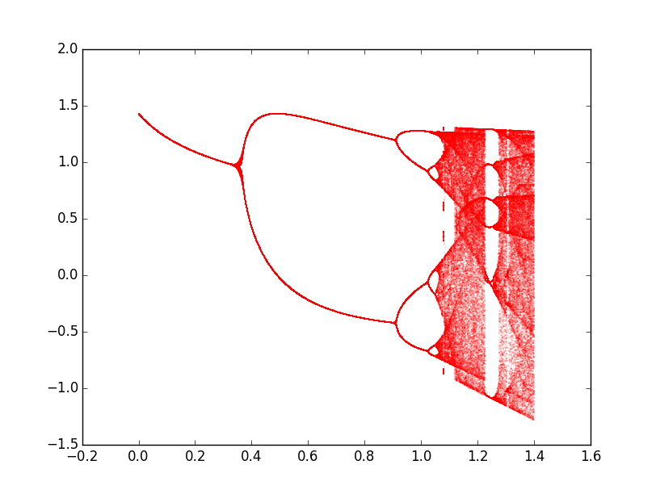

The following programm, written in
python
, computes a bifurcation diagram for the Hénon map, defined by:
\begin{equation*}
\begin{cases}
x_{n+1} = 1-a x_n ^2 + y_n \\
y_{n+1} = b x_n
\end{cases}
\end{equation*}
with parameters \(a\) and \(b\).

Bifurcation diagram
#!/usr/bin/env python3
"""
Bifurcation diagram for the Hénon map
x_{n+1} = 1-a*xn*xn+*yn
y_{n+1} = b*xn
"""
# Scientific libraries
import numpy as np
import matplotlib.pyplot as plt
# Hénon map
b = 0.3
def henon(x, y):
return 1-a*x*x+y, b*x
Niter = 100
n = 200
# Compute bifurcation diagram
file = open("diagram.dat","w")
print('Beginning computing')
for a in np.arange(0, 1.4, 0.001):
if int(100*a)%10 == 0:print('.',end='')
x, y = 0, 0
for j in range(Niter):
x, y = henon(x, y)
for j in range(n):
x, y = henon(x, y)
file.write(str(a)+' '+str(x)+'\n')
file.close()
# Open data file
with open("diagram.dat") as f:
data = f.read()
data = data.split('\n')
data = data[:-1]
x = [row.split(' ')[0] for row in data]
y = [row.split(' ')[1] for row in data]
# Figure
fig, ax = plt.subplots()
ax.scatter(x, y, s=0.01, color='red')
plt.show()